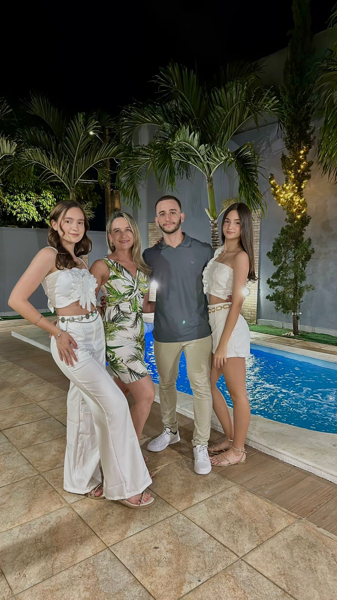
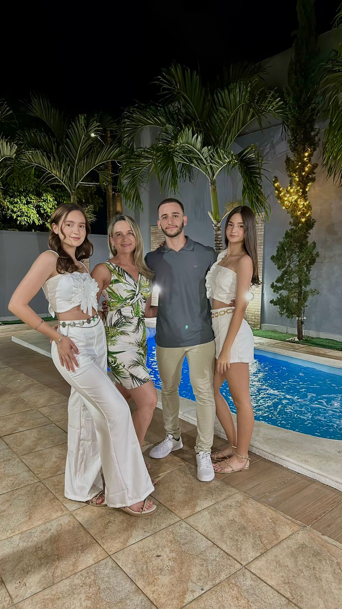
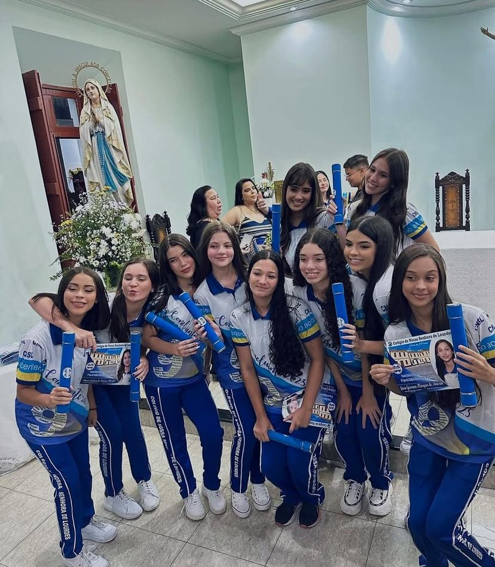
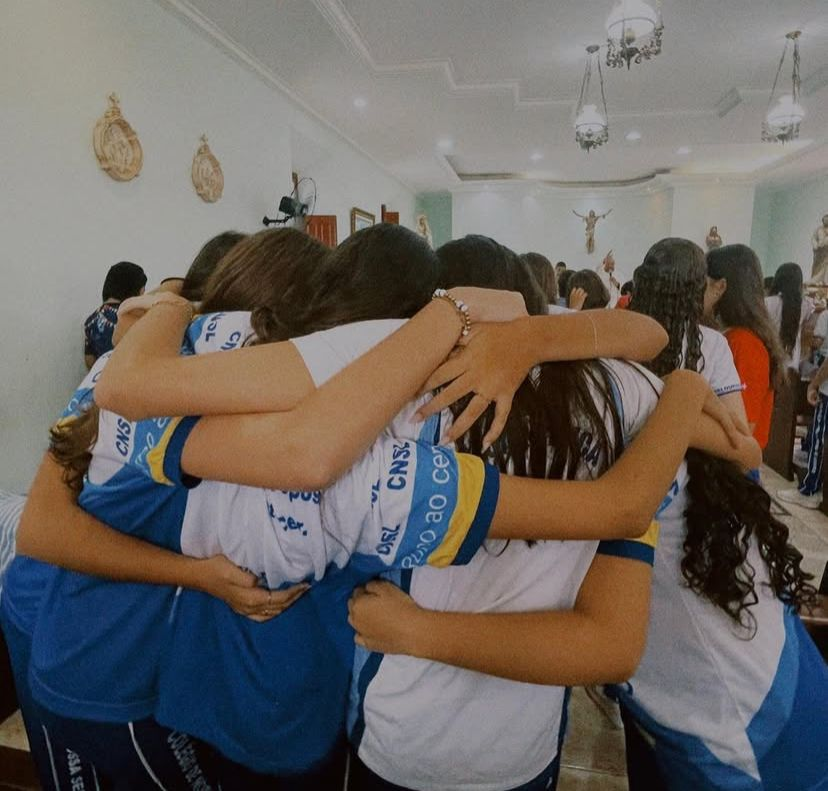
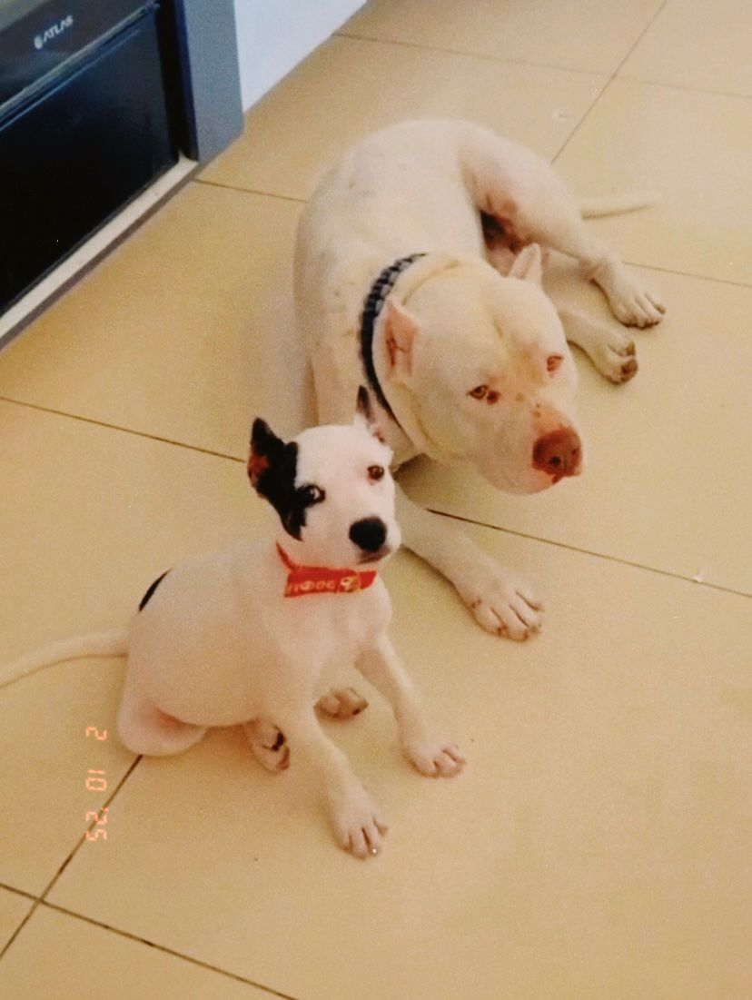

Meu nome é Maria Isadora da Fonsêca Marques, nasci em 28 de julho de 2008.
Atualmente, moro com minha mãe e meus irmãos, além de dividir a casa com meus dois cachorros, Maya e Mike.
Sou apaixonada por esportes, especialmente handebol, e também gosto de tocar violão.
Escolhi o curso de IPI para aprofundar meus conhecimentos em tecnologia,
mas meu verdadeiro objetivo é seguir carreira na área da saúde.
Minha Família
 

Momentos inesquecíveis com minhas amigas na minha antiga escola


Meus irmãos de 4 patas
